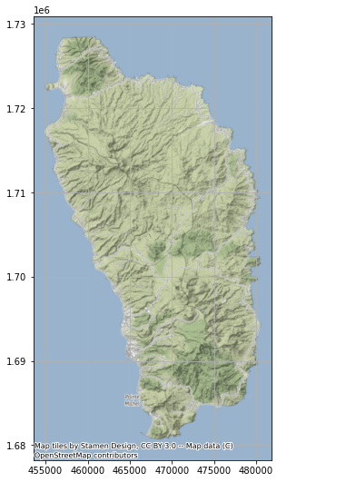
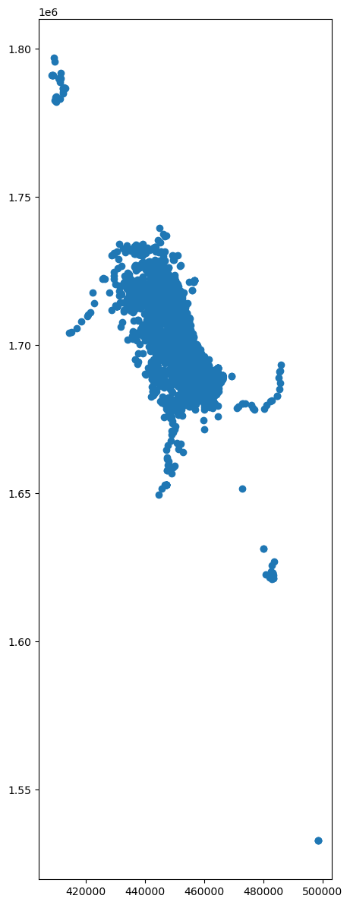
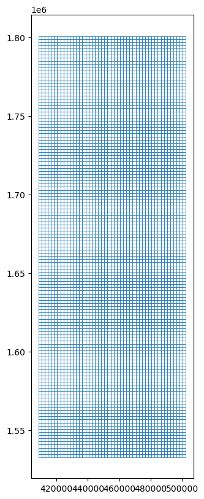
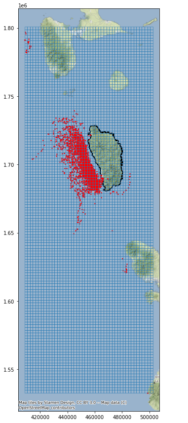
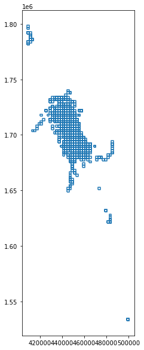
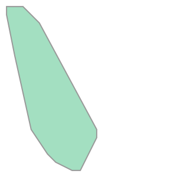
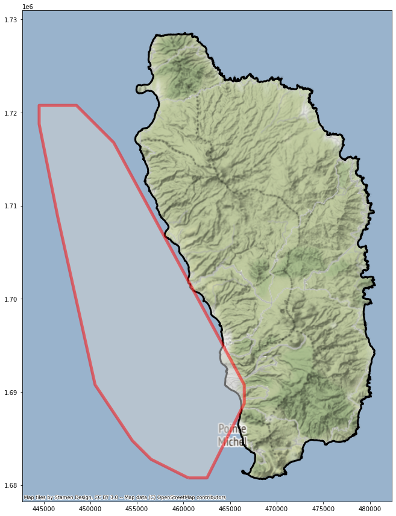
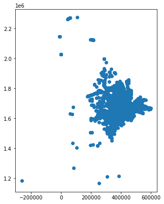
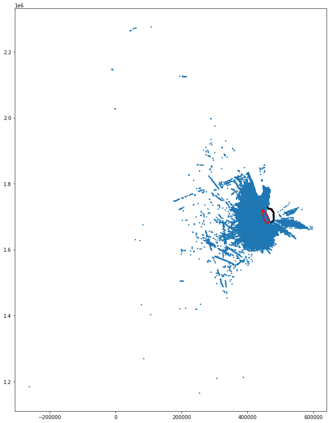
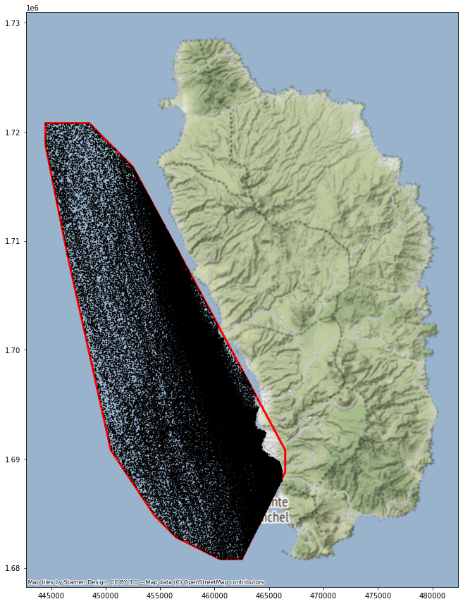

A spatial analysis using Python and GeoPandas
This analysis identifies a speed reduction zone off the island of Dominica for the purpose of reducing the occurrence of ships striking whales and quantifies the impact of reduced travel speeds on marine traffic.
Setup
Dominica outline
Plot the Dominica outline
Whale sighting data
Create grid
Extract whale habitat
Vessel data
Calculate speed and distance
import pandas as pd
import geopandas as gpd
import os
import matplotlib.pyplot as plt
import numpy as np
import shapely
import contextily as ctx# Define path to folder
input_folder = r"data/dominica"
# Join folder path and filename
fp = os.path.join(input_folder, "dma_admn_adm0_py_s1_dominode_v2.shp")
# Print out the full file path
print(fp)data/dominica/dma_admn_adm0_py_s1_dominode_v2.shp# Read file using gpd.read_file()
dominica = gpd.read_file(fp)type(dominica)geopandas.geodataframe.GeoDataFramedominica.head()| ADM0_PCODE | ADM0_EN | geometry | |
|---|---|---|---|
| 0 | DM | Dominica | POLYGON ((-61.43023 15.63952, -61.43019 15.639… |
dominica.crs<Geographic 2D CRS: EPSG:4326>
Name: WGS 84
Axis Info [ellipsoidal]:
- Lat[north]: Geodetic latitude (degree)
- Lon[east]: Geodetic longitude (degree)
Area of Use:
- name: World.
- bounds: (-180.0, -90.0, 180.0, 90.0)
Datum: World Geodetic System 1984 ensemble
- Ellipsoid: WGS 84
- Prime Meridian: Greenwich# change the projection to Dominica 1945 / British West Indies Grid (metric units)
proj_area_crs = 2002 # project area coordinate system EPSG code. Projected CRS for Dominica is 2002
dominica = dominica.to_crs(epsg=proj_area_crs)dominica.crs<Projected CRS: EPSG:2002>
Name: Dominica 1945 / British West Indies Grid
Axis Info [cartesian]:
- E[east]: Easting (metre)
- N[north]: Northing (metre)
Area of Use:
- name: Dominica - onshore.
- bounds: (-61.55, 15.14, -61.2, 15.69)
Coordinate Operation:
- name: British West Indies Grid
- method: Transverse Mercator
Datum: Dominica 1945
- Ellipsoid: Clarke 1880 (RGS)
- Prime Meridian: Greenwichax = dominica.plot(color="none", figsize=(9, 9))
ctx.add_basemap(ax, crs=dominica.crs.to_string())
ax.grid(True)
Whale habitat was approximated using data from approximately 5,000 whale sightings between 2008 and 2015.
# Define path to folder
input_folder2 = r"data"
# Join folder path and filename
fp2 = os.path.join(input_folder2, "sightings2005_2018.csv")
# Print out the full file path
print(fp2)data/sightings2005_2018.csv# Read file using gpd.read_file()
whales = gpd.read_file(fp2)type(whales)geopandas.geodataframe.GeoDataFramewhales.head()| field_1 | GPStime | Lat | Long | geometry | |
|---|---|---|---|---|---|
| 0 | 0 | 2005-01-15 07:43:27 | 15.36977117 | -61.49328433 | None |
| 1 | 1 | 2005-01-15 08:07:13 | 15.3834075 | -61.503702 | None |
| 2 | 2 | 2005-01-15 08:31:17 | 15.38106333 | -61.50486067 | None |
| 3 | 3 | 2005-01-15 09:19:10 | 15.33532083 | -61.46858117 | None |
| 4 | 4 | 2005-01-15 10:08:00 | 15.294224 | -61.45318517 | None |
# bootstrap the geometries
whale_points = gpd.points_from_xy(whales['Long'], whales['Lat'])
whale_gdf = gpd.GeoDataFrame(whales, geometry=whale_points)whale_gdf.head()| field_1 | GPStime | Lat | Long | geometry | |
|---|---|---|---|---|---|
| 0 | 0 | 2005-01-15 07:43:27 | 15.36977117 | -61.49328433 | POINT (-61.49328 15.36977) |
| 1 | 1 | 2005-01-15 08:07:13 | 15.3834075 | -61.503702 | POINT (-61.50370 15.38341) |
| 2 | 2 | 2005-01-15 08:31:17 | 15.38106333 | -61.50486067 | POINT (-61.50486 15.38106) |
| 3 | 3 | 2005-01-15 09:19:10 | 15.33532083 | -61.46858117 | POINT (-61.46858 15.33532) |
| 4 | 4 | 2005-01-15 10:08:00 | 15.294224 | -61.45318517 | POINT (-61.45319 15.29422) |
type(whale_gdf)geopandas.geodataframe.GeoDataFrame# project the dataset into an appropriate CRS
whale_gdf = whale_gdf.set_crs(epsg=4326)
whale_gdf = whale_gdf.to_crs(epsg=proj_area_crs)whale_gdf.crs<Projected CRS: EPSG:2002>
Name: Dominica 1945 / British West Indies Grid
Axis Info [cartesian]:
- E[east]: Easting (metre)
- N[north]: Northing (metre)
Area of Use:
- name: Dominica - onshore.
- bounds: (-61.55, 15.14, -61.2, 15.69)
Coordinate Operation:
- name: British West Indies Grid
- method: Transverse Mercator
Datum: Dominica 1945
- Ellipsoid: Clarke 1880 (RGS)
- Prime Meridian: Greenwichfig, ax = plt.subplots(figsize=(15,15), dpi=100)
whale_gdf.plot(ax=ax)<AxesSubplot:>
xmin, ymin, xmax, ymax = whale_gdf.total_bounds
cell_size = 2000
length = 2000
width = 2000
xs = list(np.arange(xmin, xmax + width, width)) # return evenly spaced values starting at xmin, stopping (but not including) at xmax+width, by a step of width
ys = list(np.arange(ymin, ymax + length, length))xmin, ymin, xmax, ymax(408480.65208368783, 1532792.7459409237, 498500.3049570159, 1796964.3997029224)# function to convert corner points into a cell polygon
def make_cell(x, y, cell_size):
ring = [
(x, y),
(x + cell_size, y),
(x + cell_size, y + cell_size),
(x, y + cell_size)
]
cell = shapely.geometry.Polygon(ring)
return cell# iterate over each combination of x and y coordinates in two nested for loops
cells = []
for x in xs:
for y in ys:
cell = make_cell(x, y, cell_size)
cells.append(cell)grid = gpd.GeoDataFrame({'geometry':cells}, crs=proj_area_crs)
#grid.to_file("grid.shp")grid.head()| geometry | |
|---|---|
| 0 | POLYGON ((408480.652 1532792.746, 410480.652 1… |
| 1 | POLYGON ((408480.652 1534792.746, 410480.652 1… |
| 2 | POLYGON ((408480.652 1536792.746, 410480.652 1… |
| 3 | POLYGON ((408480.652 1538792.746, 410480.652 1… |
| 4 | POLYGON ((408480.652 1540792.746, 410480.652 1… |
grid.crs<Projected CRS: EPSG:2002>
Name: Dominica 1945 / British West Indies Grid
Axis Info [cartesian]:
- E[east]: Easting (metre)
- N[north]: Northing (metre)
Area of Use:
- name: Dominica - onshore.
- bounds: (-61.55, 15.14, -61.2, 15.69)
Coordinate Operation:
- name: British West Indies Grid
- method: Transverse Mercator
Datum: Dominica 1945
- Ellipsoid: Clarke 1880 (RGS)
- Prime Meridian: Greenwichfig, ax = plt.subplots(figsize=(10,10), dpi=100)
grid.boundary.plot(ax=ax, linewidth = 0.5)<AxesSubplot:>
base = dominica.plot(facecolor='none', edgecolor='black', linewidth=2, figsize=(15, 15))
whale_gdf.plot(ax=base, facecolor='red', markersize=2)
grid.boundary.plot(ax=base, linewidth = 0.5)
ctx.add_basemap(ax=base, crs=dominica.crs.to_string())
# spatially join the grid with whale sighting data to count the number of sightings in each cell
# use an inner join since we're not interested in grid cells without any sightings
whale_grid = grid.sjoin(whale_gdf, how="inner")
whale_grid| geometry | index_right | field_1 | GPStime | Lat | Long | |
|---|---|---|---|---|---|---|
| 124 | POLYGON ((408480.652 1780792.746, 410480.652 1… | 4327 | 4327 | 2018-03-15 06:41:03 | 16.127 | -61.896866 |
| 124 | POLYGON ((408480.652 1780792.746, 410480.652 1… | 4328 | 4328 | 2018-03-15 06:44:05 | 16.127666 | -61.900766 |
| 124 | POLYGON ((408480.652 1780792.746, 410480.652 1… | 4329 | 4329 | 2018-03-15 06:58:17 | 16.1305 | -61.903366 |
| 125 | POLYGON ((408480.652 1782792.746, 410480.652 1… | 4330 | 4330 | 2018-03-15 07:15:33 | 16.139583 | -61.900116 |
| 125 | POLYGON ((408480.652 1782792.746, 410480.652 1… | 4331 | 4331 | 2018-03-15 07:17:30 | 16.14175 | -61.897716 |
| … | … | … | … | … | … | … |
| 5171 | POLYGON ((484480.652 1690792.746, 486480.652 1… | 1147 | 1147 | 2008-05-04 16:59:36 | 15.304085 | -61.194134 |
| 5172 | POLYGON ((484480.652 1692792.746, 486480.652 1… | 1148 | 1148 | 2008-05-04 17:43:45 | 15.321439 | -61.19188 |
| 6030 | POLYGON ((498480.652 1532792.746, 500480.652 1… | 609 | 609 | 2005-03-20 11:50:05 | 13.86967067 | -61.0794355 |
| 6030 | POLYGON ((498480.652 1532792.746, 500480.652 1… | 611 | 611 | 2005-03-20 12:56:58 | 13.86967067 | -61.0794355 |
| 6030 | POLYGON ((498480.652 1532792.746, 500480.652 1… | 610 | 610 | 2005-03-20 12:05:10 | 13.86967067 | -61.0794355 |
4893 rows × 6 columns
whale_grid.boundary.plot(figsize=(5,10))<AxesSubplot:>
whale_grid.crs<Projected CRS: EPSG:2002>
Name: Dominica 1945 / British West Indies Grid
Axis Info [cartesian]:
- E[east]: Easting (metre)
- N[north]: Northing (metre)
Area of Use:
- name: Dominica - onshore.
- bounds: (-61.55, 15.14, -61.2, 15.69)
Coordinate Operation:
- name: British West Indies Grid
- method: Transverse Mercator
Datum: Dominica 1945
- Ellipsoid: Clarke 1880 (RGS)
- Prime Meridian: Greenwichgrid['count'] = whale_grid.groupby(whale_grid.index).count()['index_right']
grid| geometry | count | |
|---|---|---|
| 0 | POLYGON ((408480.652 1532792.746, 410480.652 1… | NaN |
| 1 | POLYGON ((408480.652 1534792.746, 410480.652 1… | NaN |
| 2 | POLYGON ((408480.652 1536792.746, 410480.652 1… | NaN |
| 3 | POLYGON ((408480.652 1538792.746, 410480.652 1… | NaN |
| 4 | POLYGON ((408480.652 1540792.746, 410480.652 1… | NaN |
| … | … | … |
| 6293 | POLYGON ((500480.652 1790792.746, 502480.652 1… | NaN |
| 6294 | POLYGON ((500480.652 1792792.746, 502480.652 1… | NaN |
| 6295 | POLYGON ((500480.652 1794792.746, 502480.652 1… | NaN |
| 6296 | POLYGON ((500480.652 1796792.746, 502480.652 1… | NaN |
| 6297 | POLYGON ((500480.652 1798792.746, 502480.652 1… | NaN |
6298 rows × 2 columns
# subset the grid dataframe to cells that have more than 20 sightings
whale_mask = (grid['count'] > 20)
whale_mask0 False
1 False
2 False
3 False
4 False
...
6293 False
6294 False
6295 False
6296 False
6297 False
Name: count, Length: 6298, dtype: boolwhale_habitat = grid[whale_mask]speed_reduction_zone = whale_habitat.unary_union.convex_hull
speed_reduction_zone
type(speed_reduction_zone)
# need to create a new GeoDataFrame with the speed_reduction_zone as a single featureshapely.geometry.polygon.Polygonspeed_reduction_zone = gpd.GeoDataFrame(index=[0], crs='epsg:2002', geometry=[speed_reduction_zone])speed_reduction_zone.crs<Projected CRS: EPSG:2002>
Name: Dominica 1945 / British West Indies Grid
Axis Info [cartesian]:
- E[east]: Easting (metre)
- N[north]: Northing (metre)
Area of Use:
- name: Dominica - onshore.
- bounds: (-61.55, 15.14, -61.2, 15.69)
Coordinate Operation:
- name: British West Indies Grid
- method: Transverse Mercator
Datum: Dominica 1945
- Ellipsoid: Clarke 1880 (RGS)
- Prime Meridian: Greenwichtype(speed_reduction_zone)geopandas.geodataframe.GeoDataFramebase = dominica.plot(facecolor='none', edgecolor='black', linewidth=3, figsize=(15, 15))
speed_reduction_zone.plot(ax=base, facecolor='lightgray', edgecolor='red', alpha=0.5, linewidth=5)
ctx.add_basemap(ax=base, crs=dominica.crs.to_string())
Vessel data was obtained from Automatic Identification System (AIS) tranceivers from 2015.
# Join folder path and filename
fp3 = os.path.join(input_folder2, "station1249.csv")
# Print out the full file path
print(fp3)data/station1249.csv# Read file using gpd.read_file()
vessels = gpd.read_file(fp3)type(vessels)geopandas.geodataframe.GeoDataFramevessels.head<bound method NDFrame.head of field_1 MMSI LON LAT TIMESTAMP geometry
0 0 233092000 -61.84788 15.23238 2015-05-22 13:53:26 None
1 1 255803280 -61.74397 15.96114 2015-05-22 13:52:57 None
2 2 329002300 -61.38968 15.29744 2015-05-22 13:52:32 None
3 3 257674000 -61.54395 16.2334 2015-05-22 13:52:24 None
4 4 636092006 -61.52401 15.81954 2015-05-22 13:51:23 None
... ... ... ... ... ... ...
617257 238722 256525000 -61.40679 15.36907 2015-05-21 21:34:59 None
617258 238723 311077100 -61.37539 15.27406 2015-05-21 21:34:55 None
617259 238724 377907247 -61.39461 15.30672 2015-05-21 21:34:46 None
617260 238725 253365000 -61.49001 16.14007 2015-05-21 21:34:46 None
617261 238726 329002300 -61.48073 15.44751 2015-05-21 21:34:45 None
[617262 rows x 6 columns]># bootstrap the geometries
vessel_points = gpd.points_from_xy(vessels['LON'], vessels['LAT'])
vessel_gdf = gpd.GeoDataFrame(vessels, geometry=vessel_points)# project the dataset into an appropriate CRS
vessel_gdf = vessel_gdf.set_crs(epsg=4326)
vessel_gdf = vessel_gdf.to_crs(epsg=proj_area_crs)vessel_gdf.crs<Projected CRS: EPSG:2002>
Name: Dominica 1945 / British West Indies Grid
Axis Info [cartesian]:
- E[east]: Easting (metre)
- N[north]: Northing (metre)
Area of Use:
- name: Dominica - onshore.
- bounds: (-61.55, 15.14, -61.2, 15.69)
Coordinate Operation:
- name: British West Indies Grid
- method: Transverse Mercator
Datum: Dominica 1945
- Ellipsoid: Clarke 1880 (RGS)
- Prime Meridian: Greenwichvessel_gdf['TIMESTAMP'] = pd.to_datetime(vessel_gdf['TIMESTAMP'])vessel_gdf.head()| field_1 | MMSI | LON | LAT | TIMESTAMP | geometry | |
|---|---|---|---|---|---|---|
| 0 | 0 | 233092000 | -61.84788 | 15.23238 | 2015-05-22 13:53:26 | POINT (415373.315 1683307.035) |
| 1 | 1 | 255803280 | -61.74397 | 15.96114 | 2015-05-22 13:52:57 | POINT (426434.345 1763918.193) |
| 2 | 2 | 329002300 | -61.38968 | 15.29744 | 2015-05-22 13:52:32 | POINT (464555.392 1690588.725) |
| 3 | 3 | 257674000 | -61.54395 | 16.2334 | 2015-05-22 13:52:24 | POINT (447770.634 1794068.620) |
| 4 | 4 | 636092006 | -61.52401 | 15.81954 | 2015-05-22 13:51:23 | POINT (450006.361 1748297.844) |
# plot of all vessel points
vessel_gdf.plot(figsize=(5,10))<AxesSubplot:>
# plot of all vessel points
base = dominica.plot(facecolor='none', edgecolor='black', linewidth=3, figsize=(15, 15))
vessel_gdf.plot(ax=base, markersize = 3)
speed_reduction_zone.plot(ax=base, edgecolor='red', linewidth=2)<AxesSubplot:>
# spatially subset AIS data to only include vessels within identified whale habitat
vessels_in_whale_habitat = vessel_gdf.sjoin(speed_reduction_zone, how="inner")
vessels_in_whale_habitat| field_1 | MMSI | LON | LAT | TIMESTAMP | geometry | index_right | |
|---|---|---|---|---|---|---|---|
| 2 | 2 | 329002300 | -61.38968 | 15.29744 | 2015-05-22 13:52:32 | POINT (464555.392 1690588.725) | 0 |
| 7 | 7 | 338143127 | -61.39575 | 15.33418 | 2015-05-22 13:50:54 | POINT (463892.452 1694650.397) | 0 |
| 13 | 13 | 329002300 | -61.38968 | 15.29745 | 2015-05-22 13:48:32 | POINT (464555.389 1690589.831) | 0 |
| 15 | 15 | 338143015 | -61.39558 | 15.33423 | 2015-05-22 13:47:31 | POINT (463910.683 1694655.978) | 0 |
| 16 | 16 | 338143127 | -61.39757 | 15.33139 | 2015-05-22 13:47:25 | POINT (463697.964 1694341.275) | 0 |
| … | … | … | … | … | … | … | … |
| 617252 | 238717 | 329002300 | -61.4885 | 15.4706 | 2015-05-21 21:37:45 | POINT (453901.647 1709712.916) | 0 |
| 617253 | 238718 | 338143015 | -61.39553 | 15.33448 | 2015-05-21 21:37:14 | POINT (463915.972 1694683.643) | 0 |
| 617255 | 238720 | 338143127 | -61.39563 | 15.33468 | 2015-05-21 21:35:12 | POINT (463905.177 1694705.734) | 0 |
| 617259 | 238724 | 377907247 | -61.39461 | 15.30672 | 2015-05-21 21:34:46 | POINT (464023.288 1691613.624) | 0 |
| 617261 | 238726 | 329002300 | -61.48073 | 15.44751 | 2015-05-21 21:34:45 | POINT (454741.236 1707161.130) | 0 |
167411 rows × 7 columns
# plot of only vessel points within speed reduction zone
base = dominica.plot(facecolor='none', linewidth=3, figsize=(15, 15))
speed_reduction_zone.plot(ax=base, facecolor='none', edgecolor='red', linewidth=3)
vessels_in_whale_habitat.plot(ax=base, markersize = 0.5, facecolor='black')
ctx.add_basemap(ax=base, crs=dominica.crs.to_string())
# sort vessel dataframe by MMSI and time
vessels_in_whale_habitat = vessels_in_whale_habitat.sort_values(by=['MMSI', 'TIMESTAMP'])
vessels_in_whale_habitat| field_1 | MMSI | LON | LAT | TIMESTAMP | geometry | index_right | |
|---|---|---|---|---|---|---|---|
| 235025 | 235025 | 203106200 | -61.40929 | 15.21021 | 2015-02-25 15:32:20 | POINT (462476.396 1680935.224) | 0 |
| 235018 | 235018 | 203106200 | -61.41107 | 15.21436 | 2015-02-25 15:34:50 | POINT (462283.995 1681393.698) | 0 |
| 235000 | 235000 | 203106200 | -61.41427 | 15.22638 | 2015-02-25 15:42:19 | POINT (461936.769 1682722.187) | 0 |
| 234989 | 234989 | 203106200 | -61.41553 | 15.2353 | 2015-02-25 15:47:19 | POINT (461798.818 1683708.377) | 0 |
| 234984 | 234984 | 203106200 | -61.41687 | 15.23792 | 2015-02-25 15:49:50 | POINT (461654.150 1683997.765) | 0 |
| … | … | … | … | … | … | … | … |
| 259103 | 259103 | 983191049 | -61.38322 | 15.2927 | 2015-02-19 19:50:45 | POINT (465250.372 1690066.434) | 0 |
| 259094 | 259094 | 983191049 | -61.38328 | 15.29259 | 2015-02-19 19:55:09 | POINT (465243.965 1690054.249) | 0 |
| 258954 | 258954 | 983191049 | -61.38344 | 15.2932 | 2015-02-19 20:51:12 | POINT (465226.597 1690121.667) | 0 |
| 258930 | 258930 | 983191049 | -61.38329 | 15.29258 | 2015-02-19 21:02:54 | POINT (465242.895 1690053.140) | 0 |
| 258206 | 258206 | 983191049 | -61.38301 | 15.29255 | 2015-02-20 01:11:35 | POINT (465272.964 1690049.908) | 0 |
167411 rows × 7 columns
# create a copy of the vessel dataframe and shift each observation down one row using `shift()`
vessels_shift = vessels_in_whale_habitat.copy(deep=True).shift(periods=1)# rename shifted column names
vessels_shift = vessels_shift.rename(columns={"field_1": "field_1_shift", "MMSI": "MMSI_shift", "LON": "LON_shift", "LAT": "LAT_shift", "TIMESTAMP": "TIMESTAMP_shift", "geometry": "geometry_shift", "index_right": "index_right_shift"})# join original dataframe with the shifted copy using `join()`
vessels_shift_join = vessels_in_whale_habitat.join(vessels_shift).sort_values(by=['MMSI', 'TIMESTAMP'])# drop all rows in the joined dataframe in which the MMSI of the left is not the same as the one on the right
vessels_keep = vessels_shift_join.drop(vessels_shift_join[vessels_shift_join['MMSI'] != vessels_shift_join['MMSI_shift']].index)# set the geometry column
vessels_keep = vessels_keep.set_geometry("geometry")
vessels_keep2 = vessels_keep.set_geometry("geometry_shift")# calculate distance between each observation
vessels_keep['distance_m'] = vessels_keep.distance(vessels_keep2)# calculate time difference between each observation to the next
vessels_keep['time'] = vessels_keep['TIMESTAMP'] - vessels_keep['TIMESTAMP_shift']# calculate speed
meters_per_nm = 1852
vessels_keep['speed_m_per_sec'] = vessels_keep['distance_m'] / vessels_keep['time'].dt.total_seconds()
vessels_keep['speed_knots'] = vessels_keep['speed_m_per_sec'] * 60 * 60 / meters_per_nm
vessels_keep['time_10knots_minutes'] = (vessels_keep['distance_m'] * 60 ) / ( meters_per_nm * 10 )
vessels_keep['time_dif_minutes'] = vessels_keep['time_10knots_minutes'] - (vessels_keep['time'].dt.total_seconds() / 60 )
vessels_keep| field_1 | MMSI | LON | LAT | TIMESTAMP | geometry | index_right | field_1_shift | MMSI_shift | LON_shift | LAT_shift | TIMESTAMP_shift | geometry_shift | index_right_shift | distance_m | time | speed_m_per_sec | speed_knots | time_10knots_minutes | time_dif_minutes | |
|---|---|---|---|---|---|---|---|---|---|---|---|---|---|---|---|---|---|---|---|---|
| 235018 | 235018 | 203106200 | -61.41107 | 15.21436 | 2015-02-25 15:34:50 | POINT (462283.995 1681393.698) | 0 | 235025 | 203106200 | -61.40929 | 15.21021 | 2015-02-25 15:32:20 | POINT (462476.396 1680935.224) | 0.0 | 497.209041 | 0 days 00:02:30 | 3.314727 | 6.443314 | 1.610828 | -0.889172 |
| 235000 | 235000 | 203106200 | -61.41427 | 15.22638 | 2015-02-25 15:42:19 | POINT (461936.769 1682722.187) | 0 | 235018 | 203106200 | -61.41107 | 15.21436 | 2015-02-25 15:34:50 | POINT (462283.995 1681393.698) | 0.0 | 1373.116137 | 0 days 00:07:29 | 3.058165 | 5.944597 | 4.448540 | -3.034793 |
| 234989 | 234989 | 203106200 | -61.41553 | 15.2353 | 2015-02-25 15:47:19 | POINT (461798.818 1683708.377) | 0 | 235000 | 203106200 | -61.41427 | 15.22638 | 2015-02-25 15:42:19 | POINT (461936.769 1682722.187) | 0.0 | 995.792381 | 0 days 00:05:00 | 3.319308 | 6.452218 | 3.226109 | -1.773891 |
| 234984 | 234984 | 203106200 | -61.41687 | 15.23792 | 2015-02-25 15:49:50 | POINT (461654.150 1683997.765) | 0 | 234989 | 203106200 | -61.41553 | 15.2353 | 2015-02-25 15:47:19 | POINT (461798.818 1683708.377) | 0.0 | 323.533223 | 0 days 00:02:31 | 2.142604 | 4.164889 | 1.048164 | -1.468503 |
| 234972 | 234972 | 203106200 | -61.41851 | 15.24147 | 2015-02-25 15:54:49 | POINT (461476.997 1684389.925) | 0 | 234984 | 203106200 | -61.41687 | 15.23792 | 2015-02-25 15:49:50 | POINT (461654.150 1683997.765) | 0.0 | 430.317090 | 0 days 00:04:59 | 1.439188 | 2.797557 | 1.394116 | -3.589217 |
| … | … | … | … | … | … | … | … | … | … | … | … | … | … | … | … | … | … | … | … | … |
| 259103 | 259103 | 983191049 | -61.38322 | 15.2927 | 2015-02-19 19:50:45 | POINT (465250.372 1690066.434) | 0 | 259118 | 983191049 | -61.38323 | 15.29282 | 2015-02-19 19:44:46 | POINT (465249.261 1690079.703) | 0.0 | 13.315561 | 0 days 00:05:59 | 0.037091 | 0.072099 | 0.043139 | -5.940194 |
| 259094 | 259094 | 983191049 | -61.38328 | 15.29259 | 2015-02-19 19:55:09 | POINT (465243.965 1690054.249) | 0 | 259103 | 983191049 | -61.38322 | 15.2927 | 2015-02-19 19:50:45 | POINT (465250.372 1690066.434) | 0.0 | 13.766128 | 0 days 00:04:24 | 0.052144 | 0.101361 | 0.044599 | -4.355401 |
| 258954 | 258954 | 983191049 | -61.38344 | 15.2932 | 2015-02-19 20:51:12 | POINT (465226.597 1690121.667) | 0 | 259094 | 983191049 | -61.38328 | 15.29259 | 2015-02-19 19:55:09 | POINT (465243.965 1690054.249) | 0.0 | 69.619301 | 0 days 00:56:03 | 0.020702 | 0.040241 | 0.225548 | -55.824452 |
| 258930 | 258930 | 983191049 | -61.38329 | 15.29258 | 2015-02-19 21:02:54 | POINT (465242.895 1690053.140) | 0 | 258954 | 983191049 | -61.38344 | 15.2932 | 2015-02-19 20:51:12 | POINT (465226.597 1690121.667) | 0.0 | 70.438502 | 0 days 00:11:42 | 0.100340 | 0.195045 | 0.228202 | -11.471798 |
| 258206 | 258206 | 983191049 | -61.38301 | 15.29255 | 2015-02-20 01:11:35 | POINT (465272.964 1690049.908) | 0 | 258930 | 983191049 | -61.38329 | 15.29258 | 2015-02-19 21:02:54 | POINT (465242.895 1690053.140) | 0.0 | 30.241849 | 0 days 04:08:41 | 0.002027 | 0.003940 | 0.097976 | -248.585358 |
166255 rows × 20 columns
vessels_keep = vessels_keep.sort_values(by=['speed_knots'], ascending=False)# look at the vessels that would be affected by the speed reduction zone
vessels_going_too_fast = vessels_keep.drop(vessels_keep[vessels_keep['time_dif_minutes'] < 0].index)
vessels_going_too_fast| field_1 | MMSI | LON | LAT | TIMESTAMP | geometry | index_right | field_1_shift | MMSI_shift | LON_shift | LAT_shift | TIMESTAMP_shift | geometry_shift | index_right_shift | distance_m | time | speed_m_per_sec | speed_knots | time_10knots_minutes | time_dif_minutes | |
|---|---|---|---|---|---|---|---|---|---|---|---|---|---|---|---|---|---|---|---|---|
| 585844 | 207309 | 341387000 | -61.38576 | 15.29251 | 2015-06-09 09:06:21 | POINT (464977.752 1690044.647) | 0 | 207308 | 341387000 | -61.38607 | 15.29201 | 2015-06-09 09:06:21 | POINT (464944.629 1689989.252) | 0.0 | 64.542545 | 0 days 00:00:00 | inf | inf | 0.209101 | 0.209101 |
| 67091 | 67091 | 227528210 | -61.39337 | 15.25994 | 2015-04-20 14:34:00 | POINT (464170.835 1686440.078) | 0 | 67100 | 227528210 | -61.398 | 15.28175 | 2015-04-20 14:32:16 | POINT (463667.035 1688850.903) | 0.0 | 2462.902966 | 0 days 00:01:44 | 23.681759 | 46.033657 | 7.979167 | 6.245834 |
| 66925 | 66925 | 228008600 | -61.39237 | 15.24524 | 2015-04-20 15:32:10 | POINT (464282.741 1684814.545) | 0 | 66934 | 228008600 | -61.39973 | 15.28218 | 2015-04-20 15:29:11 | POINT (463481.172 1688897.947) | 0.0 | 4161.331871 | 0 days 00:02:59 | 23.247664 | 45.189844 | 13.481637 | 10.498303 |
| 499754 | 121219 | 329002300 | -61.45462 | 15.38337 | 2015-07-28 21:04:29 | POINT (457560.092 1700074.089) | 0 | 121224 | 329002300 | -61.46429 | 15.40585 | 2015-07-28 21:02:28 | POINT (456516.268 1702557.803) | 0.0 | 2694.142245 | 0 days 00:02:01 | 22.265638 | 43.280939 | 8.728323 | 6.711656 |
| 546817 | 168282 | 329002300 | -61.46676 | 15.39822 | 2015-07-01 14:21:26 | POINT (456253.335 1701713.261) | 0 | 168286 | 329002300 | -61.48043 | 15.43159 | 2015-07-01 14:18:25 | POINT (454777.668 1705400.436) | 0.0 | 3971.506067 | 0 days 00:03:01 | 21.942022 | 42.651880 | 12.866650 | 9.849984 |
| … | … | … | … | … | … | … | … | … | … | … | … | … | … | … | … | … | … | … | … | … |
| 616429 | 237894 | 636091437 | -61.53754 | 15.44274 | 2015-05-22 05:29:33 | POINT (448648.198 1706619.662) | 0 | 739 | 636091437 | -61.53754 | 15.44274 | 2015-05-22 05:29:33 | POINT (448648.198 1706619.662) | 0.0 | 0.000000 | 0 days 00:00:00 | NaN | NaN | 0.000000 | 0.000000 |
| 616427 | 237892 | 636091437 | -61.53943 | 15.45379 | 2015-05-22 05:32:33 | POINT (448442.832 1707841.362) | 0 | 736 | 636091437 | -61.53943 | 15.45379 | 2015-05-22 05:32:33 | POINT (448442.832 1707841.362) | 0.0 | 0.000000 | 0 days 00:00:00 | NaN | NaN | 0.000000 | 0.000000 |
| 616422 | 237887 | 636091437 | -61.54065 | 15.46502 | 2015-05-22 05:35:33 | POINT (448309.310 1709083.126) | 0 | 731 | 636091437 | -61.54065 | 15.46502 | 2015-05-22 05:35:33 | POINT (448309.310 1709083.126) | 0.0 | 0.000000 | 0 days 00:00:00 | NaN | NaN | 0.000000 | 0.000000 |
| 616419 | 237884 | 636091437 | -61.5419 | 15.47688 | 2015-05-22 05:38:43 | POINT (448172.433 1710394.563) | 0 | 728 | 636091437 | -61.5419 | 15.47688 | 2015-05-22 05:38:43 | POINT (448172.433 1710394.563) | 0.0 | 0.000000 | 0 days 00:00:00 | NaN | NaN | 0.000000 | 0.000000 |
| 616408 | 237873 | 636091437 | -61.54414 | 15.49936 | 2015-05-22 05:44:43 | POINT (447926.896 1712880.357) | 0 | 718 | 636091437 | -61.54414 | 15.49936 | 2015-05-22 05:44:43 | POINT (447926.896 1712880.357) | 0.0 | 0.000000 | 0 days 00:00:00 | NaN | NaN | 0.000000 | 0.000000 |
21410 rows × 20 columns
shipping_impact_minutes = vessels_going_too_fast['time_dif_minutes'].sum()
shipping_impact_days = round(shipping_impact_minutes / ( 60 * 24), 2)
shipping_impact_days27.88A 10-knot reduced speed zone in the identified whale habitat will increase travel time by approximately 27.88 days.